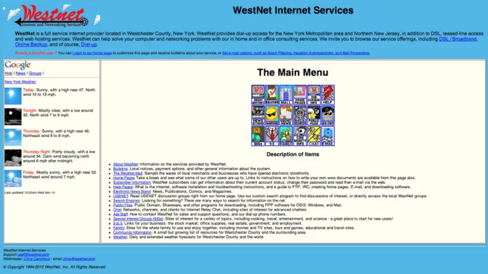

Before search engines like Google existed, navigating the web was a completely different experience. Without the ability to search things using keywords, the web a place that open to be discovered. Users found websites by following links posted on other websites and through word of mouth.
Check out some of these neat links (to go to other sections!)
The Internet Before Searching The Invention of Searching Evolution and Future of Searching Ramifications of Searching